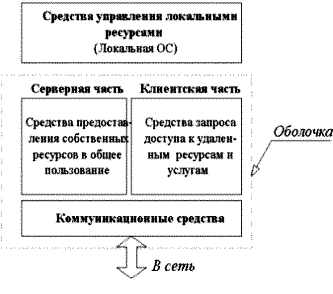
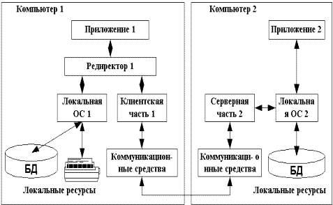
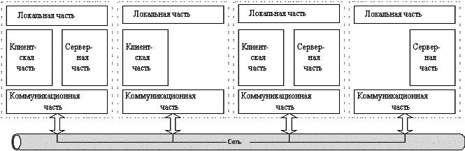
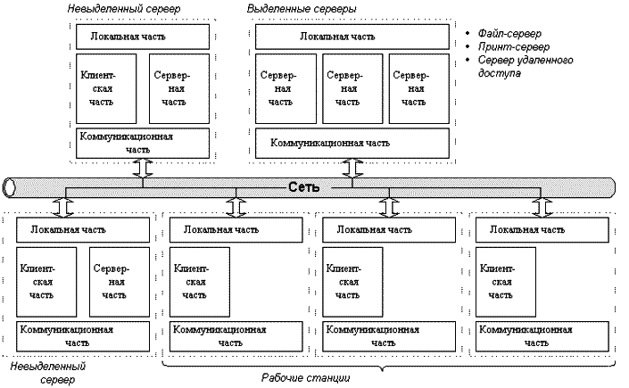
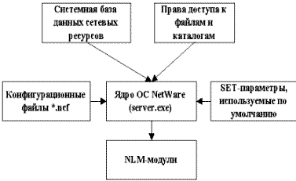
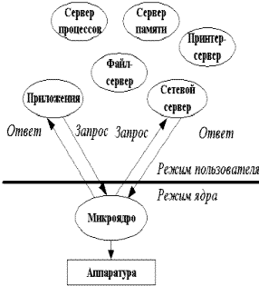
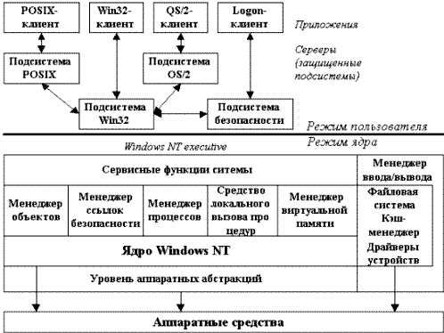
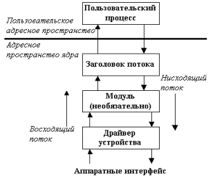

Сетевые операционные системы (Network Operating System – NOS) – это комплекс программ, обеспечивающих обработку, хранение и передачу данных в сети [32].
Сетевая операционная система выполняет функции прикладной платформы, предоставляет разнообразные виды сетевых служб и поддерживает работу прикладных процессов, выполняемых в абонентских системах. Сетевые операционные системы используют клиент серверную либо одноранговую архитектуру. Компоненты NOS располагаются на всех рабочих станциях, включенных в сеть.
NOS определяет взаимосвязанную группу протоколов верхних уровней, обеспечивающих выполнение основных функций сети. К ним, в первую очередь, относятся:
адресация объектов сети;
функционирование сетевых служб;
обеспечение безопасности данных;
управление сетью.
При выборе NOS необходимо рассматривать множество факторов. Среди них:
набор сетевых служб, которые предоставляет сеть;
возможность наращивания имен, определяющих хранимые данные и прикладные программы;
механизм рассредоточения ресурсов по сети;
способ модификации сети и сетевых служб;
надежность функционирования и быстродействие сети;
используемые или выбираемые физические средства соединения;
типы компьютеров, объединяемых в сеть, их операционные системы;
предлагаемые системы, обеспечивающие управление сетью;
используемые средства защиты данных;
совместимость с уже созданными прикладными процессами;
число серверов, которое может работать в сети;
перечень ретрансляционных систем, обеспечивающих сопряжение локальных сетей с различными территориальными сетями;
способ документирования работы сети, организация подсказок и поддержек.
Сетевая операционная система составляет основу любой вычислительной сети. Каждый компьютер в сети автономен, поэтому под сетевой операционной системой в широком смысле понимается совокупность операционных систем отдельных компьютеров, взаимодействующих с целью обмена сообщениями и разделения ресурсов по единым правилам – протоколам. В узком смысле сетевая ОС – это операционная система отдельного компьютера, обеспечивающая ему возможность работать в сети.
|
 |
|
Рис. 7.1 Структура сетевой ОС |
В соответствии со структурой, приведенной на рис. 7.1, в сетевой операционной системе отдельной машины можно выделить несколько частей.
Средства управления локальными ресурсами компьютера: функции распределения оперативной памяти между процессами, планирования и диспетчеризации процессов, управления процессорами, управления периферийными устройствами и другие функции управления ресурсами локальных ОС.
Средства предоставления собственных ресурсов и услуг в общее пользование – серверная часть ОС (сервер). Эти средства обеспечивают, например, блокировку файлов и записей, ведение справочников имен сетевых ресурсов; обработку запросов удаленного доступа к собственной файловой системе и базе данных; управление очередями запросов удаленных пользователей к своим периферийным устройствам.
Средства запроса доступа к удаленным ресурсам и услугам – клиентская часть ОС (редиректор). Эта часть выполняет распознавание и перенаправление в сеть запросов к удаленным ресурсам от приложений и пользователей. Клиентская часть также осуществляет прием ответов от серверов и преобразование их в локальный формат, так что для приложения выполнение локальных и удаленных запросов неразличимо.
Коммуникационные средства ОС, с помощью которых происходит обмен сообщениями в сети. Эта часть обеспечивает адресацию и буферизацию сообщений, выбор маршрута передачи сообщения по сети, надежность передачи и т.п., т. е. является средством транспортировки сообщений.
Для работы с сетью на клиентских рабочих станциях должно быть установлено клиентское программное обеспечение. Это программное обеспечение обеспечивает доступ к ресурсам, расположенным на сетевом сервере. Тремя наиболее важными компонентами клиентского программного обеспечения являются редиректоры (redirector), распределители (designator) и имена UNC (UNC pathnames).[5]
Редиректор – сетевое программное обеспечение, которое принимает запросы ввода/вывода для удаленных файлов, именованных каналов или почтовых слотов и затем переназначает их сетевым сервисам другого компьютера. Редиректор перехватывает все запросы, поступающие от приложений, и анализирует их.
Фактически существуют два типа редиректоров, используемых в сети:
Оба редиректора функционируют на представительском уровне модели OSI. Когда клиент делает запрос к сетевому приложению или службе, редиректор перехватывает этот запрос и проверяет, является ли ресурс локальным (находящимся на запрашивающем компьютере) или удаленным (в сети). Если редиректор определяет, что это локальный запрос, он направляет запрос центральному процессору для немедленной обработки. Если запрос предназначен для сети, редиректор направляет запрос по сети к соответствующему серверу. По существу, редиректоры скрывают от пользователя сложность доступа к сети. После того как сетевой ресурс определен, пользователи могут получить к нему доступ без знания его точного расположения.
Распределитель (designator) представляет собой часть программного обеспечения, управляющую присвоением букв накопителя (drive letter) как локальным, так и удаленным сетевым ресурсам или разделяемым дисководам, что помогает во взаимодействии с сетевыми ресурсами. Когда между сетевым ресурсом и буквой локального накопителя создана ассоциация, известная также как отображение дисковода (mapping a drive), распределитель отслеживает присвоение такой буквы дисковода сетевому ресурсу. Затем, когда пользователь или приложение получат доступ к диску, распределитель заменит букву дисковода на сетевой адрес ресурса, прежде чем запрос будет послан редиректору.
Редиректор и распределитель являются не единственными методами, используемыми для доступа к сетевым ресурсам. Большинство современных сетевых операционных систем, так же как и Windows 95, 98, NT, распознают имена UNC (Universal Naming Convention — Универсальное соглашение по наименованию). UNC представляют собой стандартный способ именования сетевых ресурсов. Эти имена имеют форму \\Имя_сервера\имя_ресурса. Способные работать с UNC приложения и утилиты командной строки используют имена UNC вместо отображения сетевых дисков.
Для того чтобы компьютер мог выступать в роли сетевого сервера необходимо установить серверную часть сетевой операционной системы, которая позволяет поддерживать ресурсы и распространять их среди сетевых клиентов. Важным вопросом для сетевых серверов является возможность ограничить доступ к сетевым ресурсам. Это называется сетевой защитой (network security). Она предоставляет средства управления над тем, к каким ресурсам могут получить доступ пользователи, степень этого доступа, а также, сколько пользователей смогут получить такой доступ одновременно. Этот контроль обеспечивает конфиденциальность и защиту и поддерживает эффективную сетевую cреду.
В дополнение к обеспечению контроля над сетевыми ресурсами сервер выполняет следующие функции:
предоставляет проверку регистрационных имен (logon identification) для пользователей;
управляет пользователями и группами;
хранит инструменты сетевого администрирования для управления, контроля и аудита;
обеспечивает отказоустойчивость для защиты целостности сети.
Некоторые из сетевых операционных систем, в том числе Windows NT, имеют программные компоненты, обеспечивающие компьютеру как клиентские, так и серверные возможности. Это позволяет компьютерам поддерживать и использовать сетевые ресурсы и преобладает в одноранговых сетях. В общем, этот тип сетевых операционных систем не так мощен и надежен, как законченные сетевые операционные системы. Главное преимущество комбинированной клиентско–серверной сетевой операционной системы заключается в том, что важные ресурсы, расположенные на отдельной рабочей станции, могут быть разделены с остальной частью сети. Недостаток состоит в том, что если рабочая станция поддерживает много активно используемых ресурсов, она испытывает серьезное падение производительности. Если такое происходит, то необходимо перенести эти ресурсы на сервер для увеличения общей производительности.
В зависимости от функций, возлагаемых на конкретный компьютер, в его операционной системе может отсутствовать либо клиентская, либо серверная части.
На рис. 7.2 компьютер 1 выполняет функции клиента, а компьютер 2 – функции сервера, соответственно на первой машине отсутствует серверная часть, а на второй - клиентская.
|  |
|
Рис. 7.2 Взаимодействие компонентов NOS |
Если выдан запрос к ресурсу данного компьютера, то он переадресовывается локальной операционной системе. Если же это запрос к удаленному ресурсу, то он переправляется в клиентскую часть, где преобразуется из локальной формы в сетевой формат, и передается коммуникационным средствам. Серверная часть ОС компьютера 2 принимает запрос, преобразует его в локальную форму и передает для выполнения своей локальной ОС. После того, как результат получен, сервер обращается к транспортной подсистеме и направляет ответ клиенту, выдавшему запрос. Клиентская часть преобразует результат в соответствующий формат и адресует его тому приложению, которое выдало запрос.
При выборе сетевой операционной системы необходимо учитывать:
В зависимости от того как распределены функции между компьютерами сети, сетевые операционные системы, а следовательно, и сети делятся на два класса: одноранговые и сети с выделенными серверами.
Если компьютер предоставляет свои ресурсы другим пользователям сети, то он играет роль сервера. При этом компьютер, обращающийся к ресурсам другой машины, является клиентом. Компьютер, работающий в сети, может выполнять функции либо клиента, либо сервера, либо совмещать обе эти функции. На рис. 7.3, 7.4 приведены примеры структур одноранговых сетей и сетей с выделенными серверами.
|  |
|
Рис. 7.3 Одноранговая сеть |
Если выполнение каких-либо серверных функций является основным назначением компьютера, то такой компьютер называется выделенным сервером. В зависимости от того, какой ресурс сервера является разделяемым, он называется файл–сервером, факс–сервером, принт–сервером, сервером приложений, сервером БД, Web–сервером и т. д. На выделенных серверах устанавливается ОС для выполнения тех или иных серверных функций. Выделенный сервер не принято использовать в качестве компьютера для выполнения текущих задач, не связанных с его основным назначением, так как это может уменьшить производительность его работы как сервера.
В одноранговых сетях все компьютеры равны в правах доступа к ресурсам друг друга. Каждый пользователь может по своему желанию объявить какой-либо ресурс своего компьютера разделяемым, после чего другие пользователи могут его эксплуатировать. В таких сетях на всех компьютерах устанавливается одна и та же ОС, которая предоставляет всем компьютерам в сети потенциально равные возможности. Одноранговые сети могут быть построены, например, на базе ОС LANtastic, Personal Ware, Windows for Workgroup, Windows NT Workstation. Одноранговые сети проще в организации и эксплуатации. Но они применяются в основном для объединения небольших групп пользователей, не предъявляющих больших требований к объемам хранимой информации, ее защищенности от несанкционированного доступа и к скорости доступа.
При повышенных требованиях к этим характеристикам более подходящими являются сети с выделенными серверами, где сервер лучше решает задачу обслуживания пользователей своими ресурсами, так как его аппаратура и сетевая операционная система специально спроектированы для этой цели.
|  |
|
Рис. 7.4 Клиент серверная сеть |
В сетях с выделенными серверами чаще всего используются сетевые операционные системы, в состав которых входит нескольких вариантов ОС, отличающихся возможностями серверных частей. Например, сетевая операционная система Novell NetWare имеет серверный вариант, оптимизированный для работы в качестве файл-сервера, а также варианты оболочек для рабочих станций с различными локальными ОС, причем эти оболочки выполняют исключительно функции клиента. Другим примером ОС, ориентированной на построение сети с выделенным сервером, является операционная система Windows NT. В отличие от NetWare, оба варианта данной сетевой ОС – Windows NT Server (для выделенного сервера) и Windows NT Workstation (для рабочей станции) - могут поддерживать функции и клиента и сервера. Но серверный вариант Windows NT имеет больше возможностей для предоставления ресурсов своего компьютера другим пользователям сети, так как может выполнять более широкий набор функций, поддерживает большее количество одновременных соединений с клиентами, реализует централизованное управление сетью, имеет более развитые средства защиты.
Сетевые операционные системы имеют разные свойства в зависимости от того, предназначены они для сетей масштаба рабочей группы (отдела), для сетей масштаба кампуса или для сетей масштаба предприятия.
Сети отделов используются небольшой группой сотрудников, решающих общие задачи. Главной целью сети отдела является разделение локальных ресурсов, таких как приложения, данные, лазерные принтеры и модемы. Сети отделов обычно не разделяются на подсети.
Сети кампусов соединяют несколько сетей отделов внутри отдельного здания или одной территории предприятия. Эти сети являются все еще локальными сетями, хотя и могут покрывать территорию в несколько квадратных километров. Сервисы такой сети обеспечивают взаимодействие между сетями отделов, доступ к базам данных предприятия, доступ к факс–серверам, высокоскоростным модемам и высокоскоростным принтерам.
Сети предприятия (корпоративные сети) объединяют все компьютеры всех территорий отдельного предприятия. Они могут покрывать город, регион или даже континент. В таких сетях пользователям предоставляется доступ к информации и приложениям, находящимся в других рабочих группах, отделах, подразделениях и штаб-квартирах корпорации.
Главной задачей операционной системы, используемой в сети масштаба отдела, является организация разделения ресурсов, таких как приложения, данные, лазерные принтеры и, возможно, низкоскоростные модемы. Обычно сети отделов имеют один или два файловых сервера и не более чем 30 пользователей. Задачи управления на уровне отдела относительно просты. В задачи администратора входит добавление новых пользователей, устранение простых отказов, инсталляция новых узлов и установка новых версий программного обеспечения. Операционные системы сетей отделов хорошо отработаны и разнообразны, так же, как и сами сети отделов, уже давно применяющиеся и достаточно отлаженные. Такая сеть обычно использует одну или максимум две сетевые ОС. Чаще всего это сеть с выделенным сервером NetWare или Windows NT, или же одноранговая сеть, например сеть Windows for Workgroups.
Операционная система, работающая в сети кампуса, должна обеспечивать для сотрудников одних отделов доступ к некоторым файлам и ресурсам сетей других отделов. Услуги, предоставляемые ОС сетей кампусов, не ограничиваются простым разделением файлов и принтеров, а часто предоставляют доступ и к серверам других типов, например к факс–серверам и серверам высокоскоростных модемов. Важным сервисом, предоставляемым операционными системами данного класса, является доступ к корпоративным базам данных. Именно на уровне сети кампуса начинаются проблемы интеграции. В общем случае, отделы уже выбрали для себя типы компьютеров, сетевого оборудования и сетевых операционных систем. Очень часто сеть кампуса соединяет разнородные компьютерные системы, в то время как сети отделов используют однотипные компьютеры.
Корпоративная сеть соединяет сети всех подразделений предприятия даже находящихся на значительных расстояниях. Корпоративные сети используют глобальные связи (WAN links) для соединения локальных сетей или отдельных компьютеров. Пользователям корпоративных сетей требуются все те приложения и услуги, которые имеются в сетях отделов и кампусов, плюс некоторые дополнительные приложения и услуги, например доступ к приложениям мейнфреймов и миникомпьютеров и к глобальным связям. Наряду с базовыми сервисами, связанными с разделением файлов и принтеров, сетевая ОС, которая разрабатывается для корпораций, должна поддерживать более широкий набор сервисов, в который обычно входят почтовая служба, средства коллективной работы, поддержка удаленных пользователей, факс-сервис, обработка голосовых сообщений, организация видеоконференций и др.
К признакам корпоративных ОС могут быть отнесены также следующие особенности.
Поддержка приложений. В корпоративных сетях выполняются сложные приложения, требующие для выполнения большой вычислительной мощности. Приложения будут выполняться более эффективно, если их наиболее сложные в вычислительном отношении части перенести на специально предназначенный для этого мощный компьютер – сервер приложений.
Справочная служба. Корпоративная ОС должна хранить информацию обо всех пользователях и ресурсах. Например, в Windows NT имеется по крайней мере пять различных типов справочных баз данных. Главный справочник домена (NT Domain Directory Service) хранит информацию о пользователях, которая используется при организации их логического входа в сеть. Данные о тех же пользователях могут содержаться и в другом справочнике, используемом электронной почтой Microsoft Mail. Еще три базы данных поддерживают разрешение низкоуровневых адресов: WINS устанавливает соответствие Netbios-имен IP-адресам, справочник DNS – сервер имен домена – оказывается полезным при подключении NT-сети к Internet, и, наконец, справочник протокола DHCP используется для автоматического назначения IP-адресов компьютерам сети. Наличие единой справочной службы для сетевой операционной системы – один из важнейших признаков ее корпоративности.
Безопасность. Особую важность для ОС корпоративной сети приобретают вопросы безопасности данных. Для защиты данных в корпоративных сетях наряду с различными аппаратными средствами используется средства защиты, предоставляемые операционной системой: избирательные или мандатные права доступа, сложные процедуры аутентификации пользователей, программная шифрация.
Файловый сервер в ОС NetWare является обычным ПК, сетевая ОС которого осуществляет управление работой ЛВС. Функции управления включают координацию рабочих станций и регулирование процесса разделения файлов и принтеров в ЛВС. Сетевые файлы всех рабочих станций хранятся на жестком диске файлового сервера, а не на дисках рабочих станций.
Сетевая операционная система NetWare допускает использование более двухсот типов сетевых адаптеров, более ста типов дисковых подсистем для хранения данных, а также устройств дублирования данных и файловых серверов.
ОС NetWare версий 3 и 4 предназначены для обеспечения доступа к общим ресурсам сети со стороны нескольких пользователей. В качестве таких ресурсов выступают файлы данных, принтеры, модемы, модули и т. д.
NetWare поддерживает возможность описания различных типов объектов: пользователей, групп, файловых серверов, очередей печати, серверов печати и т. д. Каждый из этих типов объектов имеет свой набор свойств. Например, объект–пользователь характеризуется следующими атрибутами: пароль, балансовый счет, список групп. Значением атрибута является та совокупность данных, которая содержится в полях этого атрибута. Системная база данных представляет собой множество файлов, хранящихся на томе SYS файлового сервера.
|  |
|
Рис. 7.5 Укрупненная структурная схема ОС NetWare |
Структурная схема OC приведена на рис. 7.5. Ядро ОС NetWare загружается в ОП файлового сервера из-под DOS. В процессе функционирования ядро выполняет также роль диспетчера нитей (задач) операционной системы. Каждая нить или связана с каким-либо NLM-модулем (NetWare Loadable Module – загружаемый модуль NetWare), или представляет собой внутреннюю задачу ОС. NLM-модуль – это исполняемый файл ОС NetWare 3 и 4.
Системная база данных сетевых ресурсов является частью операционной системы и играет роль надежного хранилища системной информации:
об объектах;
об их свойствах (атрибутах);
о значениях этих свойств.
Сетевая файловая система
Одна из основных целей использования сетей – это обеспечение доступа всех пользователей к общим устройствам хранения информации, в основном, к жестким дискам. Организация файловой системы во многом схожа с организацией файловой системы DOS, но также имеет отличия. Как и в DOS, информация хранится в файлах. Файлы размещаются в древовидной структуре каталогов и подкаталогов. Корнем такого дерева, в отличие от DOS, является том. Тома располагаются на серверах. При наличии соответствующих прав пользователь может получить доступ к томам всех серверов, доступных в сети.
Войдя в сеть, можно создавать другие каталоги. Пользователи могут обмениваться файлами через эти каталоги и хранить в них свои собственные файлы. Однако прежде чем использовать созданные каталоги, необходимо, во-первых, описать пользователей в системе и, во-вторых, наделить их правами, необходимыми для доступа к каталогам.
Пользователь осуществляет доступ к файлам и каталогам NetWare с рабочей станции, на которой установлена своя операционная система, например DOS.
NetWare поддерживает следующие уровни протоколов по классификации OSI:
канальный, обрабатывающий заголовок кадра (драйвер сетевого адаптера);
сетевой (протоколы IPX, SPX, NetBIOS, TLI);
транспортный (протоколы SPX, NetBIOS, TLI, NCP);
сеансовый (протоколы NetBIOS, NCP);
прикладной (протоколы RIP, NLSP, SAP).
Протокол IPX (Internetwork Packet eXchange) обрабатывает пакеты, являющиеся основным средством, которое используется при передаче данных в сетях NetWare.
Протокол IPX определяет самый быстрый уровень передачи данных в сетях NetWare. Он относится к классу дейтаграммных протоколов типа "точка–точка" без установления соединения. Это означает, что вашей прикладной программе не требуется устанавливать специальное соединение с получателем. Впрочем, IPX имеет несколько недостатков:
не гарантирует доставку данных;
не гарантирует сохранения правильной последовательности при приёме пакетов;
не подавляет прием дублированных пакетов, т. е. обработка ошибок, возникающих при передаче пакетов IPX, возлагается на прикладную программу, принимающую пакеты.
Указанных недостатков не имеет протокол транспортного уровня SPX (Sequenced Packet eXchange), ориентированный на установление соединения. Протокол SPX обрабатывает пакет SPX. Оценивая протоколы IPX и SPX, можно сказать, что протокол IPX быстр, но SPX надёжен. В NetWare протокол NETBIOS является надстройкой над протоколом IPX и используется для организации обмена данными между рабочими станциями. Протокол NetBIOS реализован в виде резидентной программы NetBIOS.EXE, входящей в комплект поставки NetWare. Сравнивая методы адресации, используемые протоколами IPX/SPX и NetBIOS, можно заметить, что метод адресации протокола NetBIOS более удобен. Вы можете адресовать данные не только одной станции (как в IPX и SPX) или всем станциям сразу (как в IPX), но и группе станций, имеющих одинаковое групповое имя.
Средства защиты информации встроены в NetWare на базовых уровнях операционной системы, а не являются надстройкой в виде какого-либо приложения. Поскольку NetWare использует на файл-сервере особую структуру файлов, то пользователи не могут получить доступ к сетевым файлам, даже если они получат физический доступ к файл-серверу.
Операционные системы NetWare содержат механизмы защиты следующих уровней:
защита информации о пользователе;
защита паролем;
защита каталогов;
защита файлов;
межсетевая защита.
С точки зрения защиты ОС NetWare не делает различия между операционными системами рабочих станций. Станции, работающие под управлением DOS, Windows, OS/2, Macintosh и UnixWare, обслуживаются совершенно одинаково, и все функции защиты применяются ко всем операционным системам, которые могут использоваться в сети NetWare.
В июле 1993 г. появились первые ОС семейства NT – Windows NT 3.1 и Windows NT Advanced Server 3.1. Выход версии 3.5, заметно снизившей требования, предъявляемые к технике, и включавшей ряд полезных функций, положил начало стремительному росту популярности ОС Windows NT. Сегодня она широко применяется самыми разными организациями, в том числе банками, заводами и индивидуальными пользователями. Операционная система Windows NT Server сертифицирована на соответствие уровню безопасности C-2. А также имеет встроенный криптографический интерфейс, позволяющий приложениям стандартным образом обращаться к системам криптозащиты разных производителей.
|
 |
| Рис. 7.6 Структура ОС на базе микроядра |
Структурно Windows NT может быть представлена в виде двух частей: часть операционной системы, работающая в режиме пользователя, и часть операционной системы, работающая в режиме ядра (рис. 7.6).
Windows NT Server может выступать как:
файл-сервер;
сервер печати;
сервер приложений;
контроллер домена;
сервер удаленного доступа;
сервер Internet;
сервер обеспечения безопасности данных;
сервер резервирования данных;
сервер связи сетей;
сервер вспомогательных служб.
Средства сетевого взаимодействия Windows NT направлены на реализацию взаимодействия с существующими типами сетей, обеспечение возможности загрузки и выгрузки сетевого программного обеспечения, а также на поддержку распределенных приложений.
Windows NT с точки зрения реализации сетевых средств имеет следующие особенности:
встроенность на уровне драйверов, обеспечивает быстродействие;
открытость, предполагает легкость динамической загрузки/выгрузки и мультиплексируемость протоколов.
наличие сервиса вызова удаленных процедур (RPC – Remote Procedure Call), именованных конвейеров и почтовых ящиков для поддержки распределенных приложений.
Наличие дополнительных сетевых средств, позволяющих строить сети в масштабах корпорации: дополнительные средства безопасности, централизованное администрирование, отказоустойчивость (источник бесперебойного питания, зеркальные диски).
Windows NT представляет из себя модульную операционную систему. Основными модулями являются:
Уровень аппаратных абстракций (Hardware Abstraction Layer – HAL);
Ядро (Kernel);
Исполняющая система (Windows NT executive);
Защитные подсистемы (Protected subsystems);
Подсистемы среды (Environment subsystems).
|  |
|
Рис. 7.7 Структура Windows NT |
Улучшенное авто распознавание аппаратуры, возможность ручного выбора и конфигурирования сетевых адаптеров, если автоматическое распознавание не дает положительного результата.
Встроенная поддержка TCP/IP. Новая высокопроизводительная реализация протоколов TCP/IP, которая обеспечивает простое, мощное решение для межсетевого взаимодействия. Помимо этого, имеются базовые утилиты, такие как ftp, tftp, telnet, команды rarp , arp, route и finger.
Значительные улучшения средств удаленного доступа RAS, включающие поддержку IPX/SPX и TCP/IP, использование стандартов Point to Point Protocol (PPP) и Serial Line IP (SLIP). Сервер RAS может теперь поддерживать до 256 соединений (вместо 64 в версии 3.1).
Полная поддержка хранения встроенных объектов OLE 2.x и поиска составных документов. К этим возможностям относятся связывание, встраивание, связывание со встроенными объектами, технологии "drag-and-drop" и OLE-Automation.
Надежность. Приложения, разработанные для MS Windows 3.x и MS-DOS, выполняются более надежно, так как каждое приложение теперь работает в своем адресном пространстве.
Поддержка различных ОС. Клиентами в сети с Windows NT Server могут являться компьютеры с различными операционными системами. Стандартно поддерживаются: MS-DOS, OS/2, Windows for Workgroups, UNIX, Macintosh, Windows NT Workstation. Программное обеспечение возможных клиентов включается в стандартную поставку Windows NT Server.
Взаимодействие с UNIX в Windows NT обеспечивается посредством поддержки общих стандартных сетевых протоколов (включая TCP/IP), стандартных способов распределенной обработки, стандартных файловых систем и совместного использования данных, а также благодаря простоте переноса приложений. Несмотря на то, что система Windows NT была разработана для поддержки работы по схеме клиент–сервер, для совместимости с UNIX-хостами встроена эмуляция терминалов.
SNMP. В Windows NT имеется ряд средств для интеграции в системы, использующие протокол SNMP (Simple Network Management Protocol), что позволяет выполнять удаленное администрирование Windows NT с помощью, например, SUN Net Manager и HP Open View. Обеспечивается поддержка графических и текстовых терминалов.
Сетевая операционная система Windows NT Workstation может использоваться как клиент в сетях Windows NT Server, а также в сетях NetWare, UNIX. Она может быть рабочей станцией и в одноранговых сетях, выполняя одновременно функции и клиента, и сервера. А также Windows NT Workstation может применяться в качестве ОС автономного компьютера при необходимости обеспечения повышенной производительности, секретности, а также при реализации сложных графических приложений, например в системах автоматизированного проектирования.
Сетевая операционная система Windows NT Server может быть использована, прежде всего, как сервер в корпоративной сети. Здесь весьма полезной оказывается его возможность выполнять функции контроллера доменов, позволяя структурировать сеть и упрощать задачи администрирования и управления. Он используется также в качестве файл-сервера, принт–сервера, сервера приложений, сервера удаленного доступа и сервера связи (шлюза). Кроме того, Windows NT Server может быть использован как платформа для сложных сетевых приложений, особенно тех, которые построены с использованием технологии клиент–сервер.
Операционная система UNIX с самого своего возникновения была по своей сути сетевой операционной системой. С появлением многоуровневых сетевых протоколов TCP/IP компания AT&T реализовала механизм потоков (Streams), обеспечивающий гибкие и модульные возможности для реализации драйверов устройств и коммуникационных протоколов. Streams представляют собой связанный набор средств общего назначения, включающий системные вызовы и подпрограммы, а также ресурсы ядра. В совокупности эти средства обеспечивают стандартный интерфейс символьного ввода/вывода внутри ядра, а также между ядром и соответствующими драйверами устройств, предоставляя гибкие и развитые возможности разработки и реализации коммуникационных сервисов.
Большая часть коммуникационных средств ОС UNIX основывается на использовании протоколов стека TCP/IP. В UNIX System V Release 4 протокол TCP/IP реализован как набор потоковых модулей плюс дополнительный компонент TLI (Transport Level Interface - Интерфейс транспортного уровня). TLI является интерфейсом между прикладной программой и транспортным механизмом. Приложение, пользующееся интерфейсом TLI, получает возможность использовать TCP/IP.
Простейшая форма организации потокового интерфейса показана на рисунке.
|  |
|
Рис. 7.8 Простая форма потокового интерфейса |
Одним из достоинств ОС UNIX является то, что система базируется на небольшом числе интуитивно ясных понятий.
С самого начала ОС UNIX замышлялась как интерактивная система. Другими словами, операционная система UNIX предназначена для терминальной работы. Чтобы начать работать, человек должен "войти" в систему, введя со свободного терминала свое учетное имя (account name) и, возможно, пароль (password). Человек, зарегистрированный в учетных файлах системы и, следовательно, имеющий учетное имя, называется зарегистрированным пользователем системы. Регистрацию новых пользователей обычно выполняет администратор системы. Пользователь не может изменить свое учетное имя, но может установить и/или изменить свой пароль.
ОС UNIX одновременно является операционной средой использования существующих прикладных программ и средой разработки новых приложений. Новые программы могут писаться на разных языках (Фортран, Паскаль, Модула, Ада и др.). Однако стандартным языком программирования в среде ОС UNIX является язык Си (который в последнее время все больше заменяется на Си++). Это объясняется тем, что, во-первых, сама система UNIX написана на языке Си, а, во-вторых, язык Си является одним из наиболее качественно стандартизованных языков.
Как и в любой другой многопользовательской операционной системе, обеспечивающей защиту пользователей друг от друга и защиту системных данных от любого непривилегированного пользователя, в ОС UNIX имеется защищенное ядро, которое управляет ресурсами компьютера и предоставляет пользователям базовый набор услуг.
К основным функциям ядра ОС UNIX принято относить следующие.
Инициализация системы – функция запуска и раскрутки. Ядро системы обеспечивает средство раскрутки (bootstrap), которое обеспечивает загрузку полного ядра в память компьютера и запускает ядро.
Управление процессами и нитями – функция создания, завершения и отслеживания существующих процессов и нитей (процессов, выполняемых на общей виртуальной памяти). Поскольку ОС UNIX является мультипроцессорной операционной системой, ядро обеспечивает разделение между запущенными процессами времени процессора (или процессоров в мультипроцессорных системах) и других ресурсов компьютера для создания внешнего ощущения того, что процессы реально выполняются в параллель.
Управление памятью – функция отображения практически неограниченной виртуальной памяти процессов в физическую оперативную память компьютера, которая имеет ограниченные размеры. Соответствующий компонент ядра обеспечивает разделяемое использование одних и тех же областей оперативной памяти несколькими процессами с использованием внешней памяти.
Управление файлами – функция, реализующая абстракцию файловой системы, иерархии каталогов и файлов. Файловые системы ОС UNIX поддерживают несколько типов файлов. Некоторые файлы могут содержать данные в формате ASCII, другие будут соответствовать внешним устройствам. В файловой системе хранятся объектные файлы, выполняемые файлы и т.д. Файлы обычно хранятся на устройствах внешней памяти; доступ к ним обеспечивается средствами ядра. В мире UNIX существует несколько типов организации файловых систем. Современные варианты ОС UNIX одновременно поддерживают большинство типов файловых систем.
Коммуникационные средства - функция, обеспечивающая возможности обмена данными между процессами, выполняющимися внутри одного компьютера (IPC - Inter-Process Communications), между процессами, выполняющимися в разных узлах локальной или глобальной сети передачи данных, а также между процессами и драйверами внешних устройств.
Программный интерфейс – функция, обеспечивающая доступ к возможностям ядра со стороны пользовательских процессов на основе механизма системных вызовов, оформленных в виде библиотеки функций.
Понятие файла является одним из наиболее важных для ОС UNIX. Все файлы, с которыми могут манипулировать пользователи, располагаются в файловой системе, представляющей собой дерево, промежуточные вершины которого соответствуют каталогам, а листья – файлам и пустым каталогам. Реально на каждом логическом диске (разделе физического дискового пакета) располагается отдельная иерархия каталогов и файлов.
Каждый каталог и файл файловой системы имеет уникальное полное имя (в ОС UNIX это имя принято называть full pathname – имя, задающее полный путь, поскольку оно действительно задает полный путь от корня файловой системы через цепочку каталогов к соответствующему каталогу или файлу; мы будем использовать термин "полное имя", поскольку для pathname отсутствует благозвучный русский аналог). Каталог, являющийся корнем файловой системы (корневой каталог), в любой файловой системе имеет предопределенное имя "/" (слэш).
Поскольку ОС UNIX с самого своего зарождения задумывалась как многопользовательская операционная система, в ней всегда была актуальна проблема авторизации доступа различных пользователей к файлам файловой системы. Под авторизацией доступа мы понимаем действия системы, которые допускают или не допускают доступ данного пользователя к данному файлу в зависимости от прав доступа пользователя и ограничений доступа, установленных для файла. Схема авторизации доступа, примененная в ОС UNIX, настолько проста и удобна и одновременно настолько мощна, что стала фактическим стандартом современных операционных систем (не претендующих на качества систем с многоуровневой защитой).
При входе пользователя в систему программа login проверяет, что пользователь зарегистрирован в системе и знает правильный пароль (если он установлен), образует новый процесс и запускает в нем требуемый для данного пользователя shell. Но перед этим login устанавливает для вновь созданного процесса идентификаторы пользователя и группы, используя для этого информацию, хранящуюся в файлах /etc/passwd и /etc/group. После того, как с процессом связаны идентификаторы пользователя и группы, для этого процесса начинают действовать ограничения для доступа к файлам. Процесс может получить доступ к файлу или выполнить его (если файл содержит выполняемую программу) только в том случае, если хранящиеся при файле ограничения доступа позволяют это сделать. Связанные с процессом идентификаторы передаются создаваемым им процессам, распространяя на них те же ограничения. Однако в некоторых случаях процесс может изменить свои права с помощью системных вызовов setuid и setgid, а иногда система может изменить права доступа процесса автоматически.
Как и принято, в многопользовательской операционной системе, в UNIX поддерживается единообразный механизм контроля доступа к файлам и справочникам файловой системы. Любой процесс может получить доступ к некоторому файлу в том и только в том случае, если права доступа, описанные при файле, соответствуют возможностям данного процесса.
Защита файлов от несанкционированного доступа в ОС UNIX основывается на трех фактах. Во-первых, с любым процессом, создающим файл (или справочник), ассоциирован некоторый уникальный в системе идентификатор пользователя (UID - User Identifier), который в дальнейшем можно трактовать как идентификатор владельца вновь созданного файла. Во-вторых, с каждый процессом, пытающимся получить некоторый доступ к файлу, связана пара идентификаторов - текущие идентификаторы пользователя и его группы. В-третьих, каждому файлу однозначно соответствует его описатель – i-узел.
Любая UNIX-подобная операционная система состоит из ядра и некоторых системных программ. Также существуют некоторые прикладные программы для выполнения какой-либо задачи.
Ядро является сердцем операционной системы. Оно размещает файлы на диске, запускает программы и переключает процессор и другое оборудование между ними для обеспечения мультизадачности, распределяет память и другие ресурсы между процессами, обеспечивает обмен пакетами в сети и т.п. Ядро само по себе выполняет только маленькую часть общей работы, но оно предоставляет средства, обеспечивающие выполнение основных функций. Оно также предотвращает возможность прямого доступа к аппаратным средствам, предоставляя специальные средства для обращения к периферии. Таким образом, ядро позволяет контролировать использование аппаратных средств различными процессами и обеспечивать некоторую защиту пользователей друг от друга.
Системные программы используют средства, предоставляемые ядром для обеспечения выполнения различных функций операционной системы. Системные и все остальные программы выполняются на поверхности ядра, в так называемом пользовательском режиме. Существует некоторая разница между системными и прикладными программами. Прикладные программы предназначены для выполнения какой-либо определенной задачи, в то время как системные программы используются для поддержания работы системы. Текстовый процессор является прикладной программой, а программа telnet – системной, хотя зачастую граница между ними довольно смутная.
Довольно часто операционная система содержит компиляторы и соответствующие им библиотеки, хотя не обязательно все языки программирования должны быть частью операционной системы. Документация, а иногда даже игры, могут являться ее частью. Обычно состав операционной системы определяется содержимым установочного диска или ленты, хотя дело обстоит несколько сложнее, так как различные части операционной системы разбросаны по разным FTP серверам во всем мире.
Как в системе UNIX, так и в Linux, пользовательский интерфейс не встраивается в ядро системы. Вместо этого он представляется программами пользовательского уровня. Это применяется как к текстовым, так и к графическим оболочкам.
Такой стандарт делает систему более гибкой, хотя и имеет свои недостатки. Например, позволяет создавать новые интерфейсы для программ.
Первоначально используемой с системой Linux графической оболочкой была система X Window System (сокращенно X). Она не реализует пользовательский интерфейс, а только оконную систему, т. е. средства, с помощью которых может быть реализован графический интерфейс. Три наиболее популярных версии графических интерфейсов на основе X – это Athena, Motif и Open Look.
Подключение к системе через сеть работает несколько иначе, чем обычное подключение. Существуют отдельные физические последовательные линии для каждого терминала, через которые и происходит подключение. Для каждого пользователя, подключающегося к системе, существует отдельное виртуальное сетевое соединение, и их может быть любое количество. Однако не представляется возможным запустить отдельный процесс для каждого возможного виртуального соединения. Существуют также и другие способы подключения к системе посредством сети. Например, telnet и rlogin – основные службы в TCP/IP сетях.
Одна из наиболее полезных функций, которая может быть реализована с помощью сети, это разделение файлов через сетевую файловую систему. Обычно используется система, называемая Network File System или NFS, которая разработана корпорацией Sun.
При работе с сетевой файловой системой любые операции над файлами, производимыми на локальном компьютере, передаются через сеть на удаленную машину. При работе сетевой файловой системы программа считает, что все файлы на удаленном компьютере находятся на компьютере, где она запущена. Таким образом, разделение информации посредством такой системы не требует внесения каких-либо изменений в программу.
Электронная почта является самым важным средством связи между компьютерами. Электронные письма хранятся в одном файле в специальном формате. Для чтения и отправления писем применяются специальные программы.
У каждого пользователя имеется отдельный почтовый ящик, файл, где информация хранится в специальном формате, в котором хранится приходящая почта. Если на компьютер приходит письмо, то программа обработки почты находит файл почтового ящика соответствующего пользователя и добавляет туда полученное письмо. Если же почтовый ящик пользователя находится на другом компьютере, то письмо перенаправляется на этот компьютер, где проходит его последующая обработка.
Почтовая система состоит из множества различных программ. Доставка писем к локальным или удаленным почтовым ящикам производится одной программой (например, sendmail или smail), в то время как для обычной отправки или просмотра писем применяется большое количество различных программ (например, Pine или elm).Файлы почтовых ящиков обычно хранятся в каталоге /var/spool/mail.
Что такое NOS и каково ее назначение?
Какие функции сети выполняет сетевая операционная система?
Из каких частей состоит структура NOS?
Что такое редиректор?
Как подразделяются сетевые операционные системы по правам доступа к ресурсам?
Как подразделяются сетевые операционные системы по масштабу сетей?
Как зависят свойства сетевой операционной системы от масштаба сетей?
Дать характеристику сетевой операционной системы NetWare фирмы Novell.
Из каких элементов состоит структура сетевой операционной системы NetWare?
Дать характеристику файловой системы сетевой ОС NetWare.
Какие уровни протоколов поддерживает сетевая операционная система NetWare?
Перечислить функции протоколов IPX, SPX.
Дать характеристику сетевой операционной системы Windows NT.
Перечислить задачи сетевой операционной системы Windows NT.
Из каких элементов состоит структура сетевой операционной системы Windows NT?
Дать характеристику файловой системы сетевой ОС Windows NT.
Какие принципы защиты используются в сетевой ОС Windows NT?
Перечислить особенности сетевой операционной системы Windows NT с точки зрения реализации сетевых средств.
Назвать свойства сетевой операционной системы Windows NT.
Каковы области использования Windows NT?
Дать характеристику сетевой операционной системы UNIX.
Перечислить функции сетевой операционной системы UNIX.
Дать характеристику файловой системы сетевой ОС UNIX.
Какие принципы защиты используются UNIX?
Дать обзор сетевой операционной системы Linux.
Охарактеризовать работу с сетью в сетевой ОС Linux.
Дать характеристику файловой системы сетевой ОС Linux.